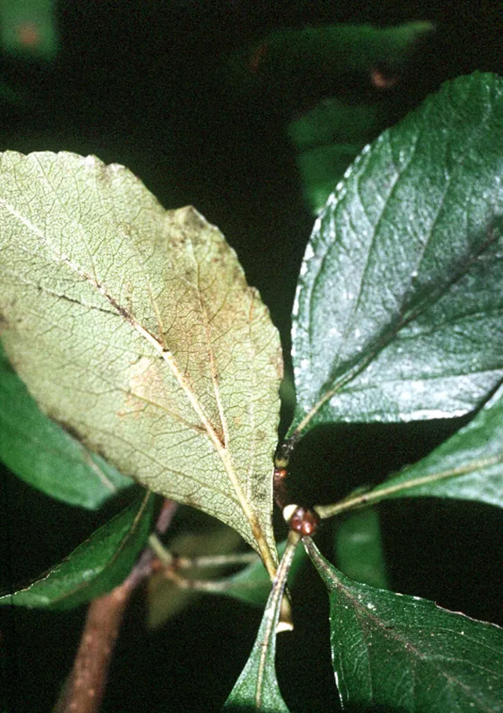

Sauces, preserves & sides · Popular in Southeast
Mayhaw jelly
Mayhaw jelly is made with wild mayhaw, a favourite in Southeast.

How do you make mayhaw jelly?
Louisiana and Georgia's spring jelly.
Wild ingredients
- Mayhaw (Crataegus aestivalis): in season May
Watch the recipe

Video: Duck Commander on YouTube